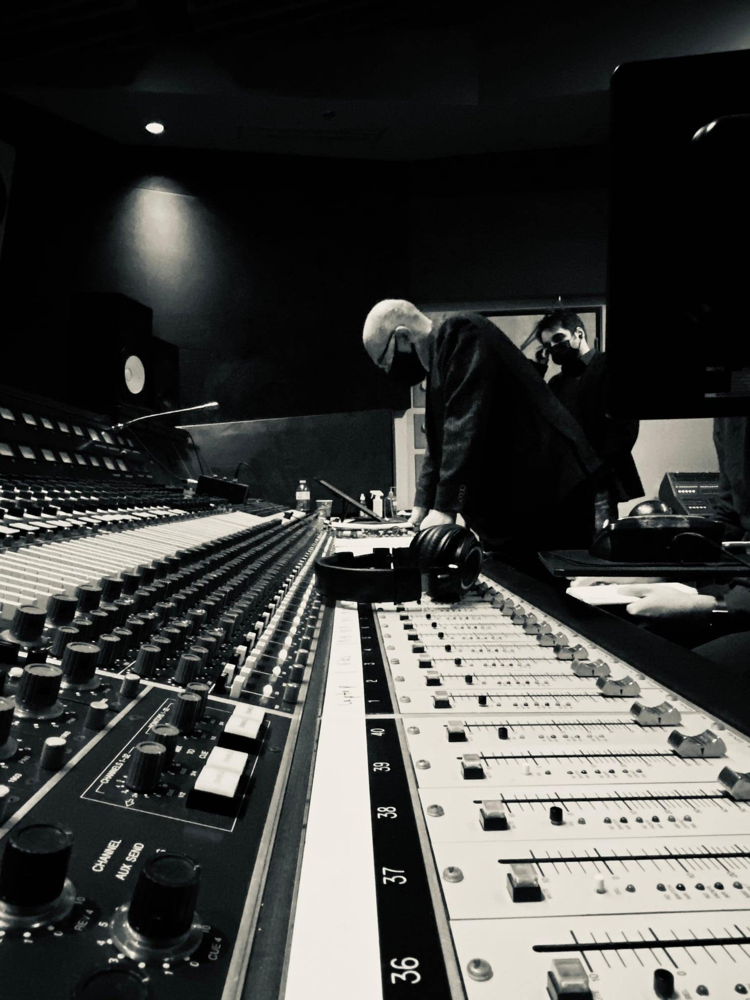

"...a multi-stylistic masterpiece…Emami’s masterful ability to combine…symphonic, jazz, Persian, and contemporary..."
— Tiina Kiik, THE WHOLE NOTE MAGAZINE on The Black Fish
"A remarkable piece…Emami's music eloquently and poignantly evokes...a dark and moving..."
— Victor Lazarov, LA SCENA MUSICALE on Kian in Rainbows
News
January 29 2024
Excited to perform 'The Black Fish' with The Black Fish Ensemble this Wednesday, January 31st, at the Canadian Opera Company, Richard Bradshaw Amphitheatre!
Also, check out this video excerpt of 'The Black Fish' to get a sneak peek of what's to come! https://youtu.be/c_Hhk8RRqLM?si=U82gio5CxNDpchfn
January 21 2024
Neekta's Fundraiser Concert Success
I'm thrilled to share the success of my talented student Neekta, who recently performed my piano composition "Ecstatic" at her Fundraiser concert. Her outstanding performance not only captivated the audience but also raised over $8000.
Help Neekta give the gift of clean water. 100% of every donation raised will fund charity: water's work providing access to clean water projects around the world. Donate here
January 2 2024
Announcing My Role as Examiner at the Royal Conservatory College of Examiners
Starting in winter 2023, I'm honored to join the esteemed Royal Conservatory of Music College of Examiners as an Examiner. Looking forward to engaging with and evaluating numerous candidates hailing from North America and Europe.
November 2 2024
Exciting news! Rogue Duo will be performing my new work for violin and piano, 'Nah,' commissioned by them as part of their fall tour. Catch them at the Toronto Four Seasons Centre on November 8, at the Don Wright Faculty of Music in London on November 10, and in Waterloo on November 17. Don't miss this opportunity to experience the premiere of 'Nah' live!
October 13 2023
It’s here: "Kian in Rainbows" Now Available on "Recurrence" Album!

Delighted to share that my composition, "Kian in Rainbows," is featured on the newly released "Recurrence" album. This captivating collection showcases five brand-new compositions by Canada's finest composers, beautifully performed by our nation's renowned artists. Listen to Kian in Rainbows here
August 9 2023
Video Release: "Streams of the Unconscious"
I'm thrilled to share the live performance video of "Streams of the Unconscious" for electric guitar and percussion quartet, co-composed by myself and ICOT. This special project, commissioned by Soundstreams, allowed us to delve into our musical identities as diaspora artists.
Huge thanks to the talented performers Yang Chen, Andrew Noseworthy, Tim Francom, as well as TorQ Percussion Quartet members Richard Burrows and Jamie Drake, who brought this mesmerizing composition to life.
Watch the video here: Link
July 16, 2023
My Debut Solo Album Launch!
Join us this Wednesday, July 19th, at 7:30 pm for The Black Fish Album Launch in Mississauga! Experience an unforgettable concert featuring my JUNO-nominated composition “The Black Fish” by talented musicians, followed by a cozy reception at the same venue. We'd love to see you there and say hi!
Special thanks to Cheryl Duvall and The Chamber Music Society of Mississauga for graciously hosting us and the incredible Black Fish Ensemble.
Come celebrate with us at The Black Fish Album Launch!
May 26 2023
Recording Session of "Kian in Rainbows" in Toronto
I'm excited to share a behind-the-scenes glimpse into the recording session of "Kian in Rainbows" in Toronto on May 19. This captivating composition, crafted by myself, brought together a talented team of musicians and professionals to bring the music to life

Team Members:
Standing (L-R): Beverly Johnston (percussion) Peter Stoll (bass clarinet) Les Allt (flute) Sharon Wei (viola) Keyan Emami (composer, narrator) Maziar Heidari (conductor) Brian Manker (cello) Jonathan Crow (violin) Pouya Hamidi (recording engineer) Scott Peterson (bass)
Sitting (L-R): Ryan Scott (percussion) Andrew Wan (violin) Saman Shahi (piano) Jeremy VanSlyke (producer)
Stay tuned for more updates on the release of "Kian in Rainbows" and the upcoming album!
April 6 2023
world premiere of "Streams of the Unconscious"
I'm thrilled to invite you to the world premiere of "Streams of the Unconscious," my latest co-composition with ICOT. Join us next Thursday, April 13th, at the Heliconian Club in Toronto for an unforgettable evening of music and exploration.
This captivating piece, commissioned and produced by Soundstreams, delves into the mind of a displaced person, exploring the ongoing identity battle of a refugee, the constant daydreaming of an immigrant, and their collective efforts to negotiate new meaning in the intersectionality of their lives. Featuring the talented members of TorQ Percussion Quartet and Andrew Noseworthy on electric guitar, "Streams of the Unconscious" promises to be an immersive experience like no other.
Save the date and join us for an evening of blurred realities and thought-provoking exploration. I can't wait for you all to experience it firsthand!

We were pleasantly surprised and honored to have a very special guest among us at the concert: The former Governor General of Canada, Ms. Adrienne Clarkson!
March 11 2023
First Time in Edmonton: Celebrating the 2023 JUNO Opening Night Awards
Exciting time at the JUNO Opening Night Awards! First time in Edmonton for the opening night, celebrating with all nominees and CARAS as they honor Canada's music scene at the 2023 JUNO Opening Night Awards Presented by Music Canada.
March 5 2023
Premiere of "A Naked Mind"

I'm delighted to announce the premiere of my latest original co-composition for the feature film "A Naked Mind." Join us for a screening of the film at the Innis Town Hall Theatre at the University of Toronto on March 5th at 6:30 pm, where my composition will be showcased alongside this captivating cinematic experience.
February 1 2023
“The Black Fish” receives JUNO Award nomination for Classical Composition of the Year
Gratitude to The JUNO Awards for the nomination of "The Black Fish" for classical composition of the year.
I extend heartfelt thanks to the dedicated Black Fish team whose unwavering support made this nomination possible: The Ton Beau String Quartet, Bijan Sepanji, Patrick Goodwin, Alex McLeod, Sarah Steeves, Andrew Downing, Majd Sekkar, Louis Pino, Naoko Tsujita, Kate Tavasoli, Roberto Occhipinti, Pouya Hamidi, Reuben Ghose, Mehdi Farahani, Hadi Dinevari, Nicole Reeve Blain, Revolution Recording, Centrediscs Naxos, Canadian Music Centre, Toronto Arts Council, Ontario Arts Council, Canada Council for the Arts.
October 14 2022
“The Black Fish” Album Release

Exciting News Alert: My debut album, "The Black Fish," is now available! Embark on a captivating musical journey as you dive into the mesmerizing sounds of "The Black Fish," streaming and ready for purchase on all major platforms. Don't miss out—experience the magic today!
Listen to the album here: theblackfish
September 24 2022
My Piano Compositions Featured at TSO's 100th Anniversary Open House!
Delighted to announce that my piano compositions will be featured at the Toronto Symphony Orchestra’s 100th anniversary open house on Saturday, September 24th, at the iconic Roy Thompson Hall!
September 17 2022
Experience 'Images' with Scarborough Philharmonic Orchestra and Odin Quartet
Join us this Saturday, September 24th, at 7:30 PM for a spectacular concert in Scarborough featuring the Scarborough Philharmonic Orchestra and Odin Quartet. The event will showcase my co-composition with ICOT, "Images," for trumpet, clarinet, bassoon, and cello.
July 26 2022
‘The Black Fish’ at Toronto Palais Royal
Experience 'The Black Fish' live at Palais Royal on August 9th! Join us for the third mesmerizing performance in Toronto by The Black Fish Ensemble. Don't miss this enchanting musical journey against the backdrop of breathtaking lake views—it's an experience you won't want to miss!
An Immersive 360 Live Performance of ‘The Black Fish’
July 11 2022
‘The Black Fish’ at Meridian Arts Centre
Immerse Yourself in an Unforgettable Musical Journey: Our Exclusive Performance at the Tirgan Festival on July 18 at Meridian Arts Centre Marks the Second Chapter of 'The Black Fish,' Thanks to the Incredible Musicians of The Black Fish Ensemble.
May 11 2022
World Premiere of The Black Fish at Aga Khan Auditorium on May 27
Embark on a musical odyssey at the world premiere of 'The Black Fish' on May 27 at Aga Khan Auditorium. This avant-garde work promises an evening of enchantment with its groundbreaking fusion of genres. Join us for this historic event. Limited tickets are available.
November 27 2021
Recording ‘The Black Fish’ at Revolution Studio
Join me behind the scenes as we craft the captivating sounds of 'The Black Fish' at Revolution Studio on November 26th and 27th, alongside the talented JUNO-nominated sound engineer Pouya Hamidi and esteemed producer Roberto Occhipinti.
September 27 2021
I am pleased to extend my sincere appreciation to the Ontario Arts Council, Toronto Arts Council, and Canada Council for the Arts for their generous support of my work, 'The Black Fish.' This three-movement, forty-minute composition, commissioned by The Ton Beau String Quartet, blends narrator, chamber ensemble, and electronics to create a captivating musical experience. Their invaluable assistance has played a pivotal role in bringing this project to fruition.
The Black Fish Ensemble:
Back Row (L-R):
Majd Sekkar (clarinet) Alex McLeod (viola) Keyan Emami (composer, electronics, narrator) Bijan Sepanji (violin) Andrew Downing (bass)
Front Row (L-R):
Sarah Steeves (cello) Louis Pino (percussion) Patrick Goodwin (violin) Naoko Tsujita (percussion)